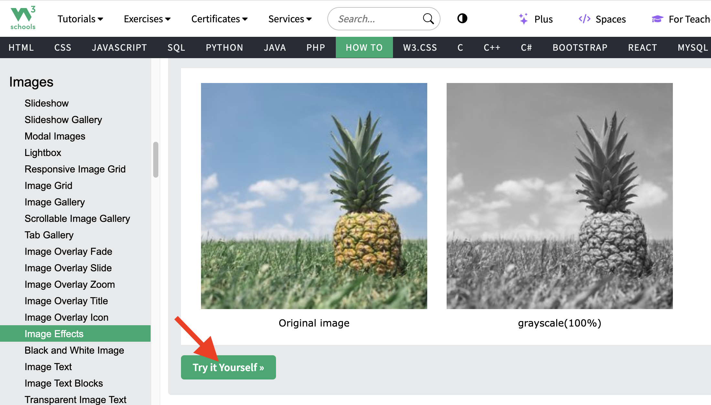
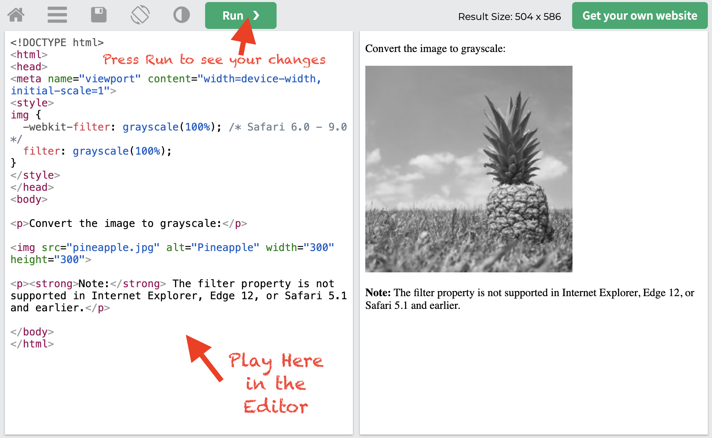

WEB Fundamentals
WDD 130
Web Components
Overview
- Task: Test simple web components that can add detail to a web page.
- Purpose: To practice creating components using HTML and CSS.
Background
Web components are a set of code snippets of HTML and CSS that can be used in your web pages. They can be used to make menus, images, buttons, tables, and forms more interactive.
Instructions
-
Explore and Play
Go to W3Schools HowTo and explore two or more components from each of the following sections: Menus, Images, Buttons, Forms, and Tables.
-
Try It
For each of the ten components you explore click the "Try It Yourself" button and play with the code snippets to figure out how it works.
  -
Submit
Submit a screen shot of one of your favorite components that you manipulated